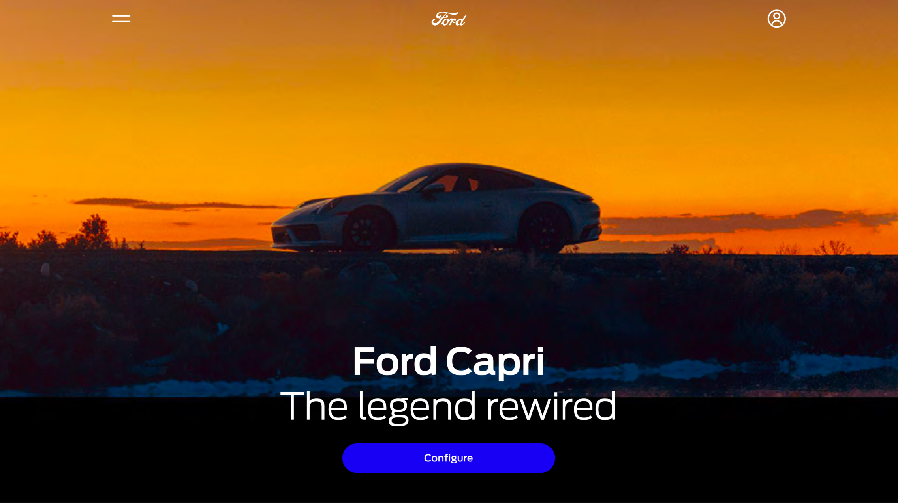
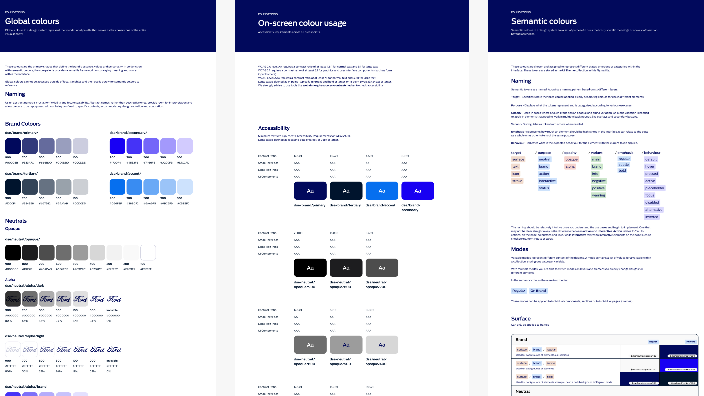
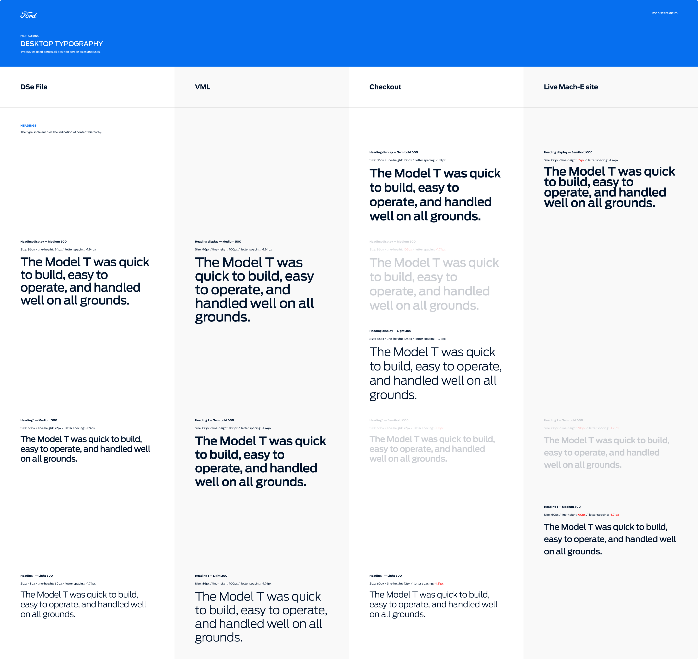
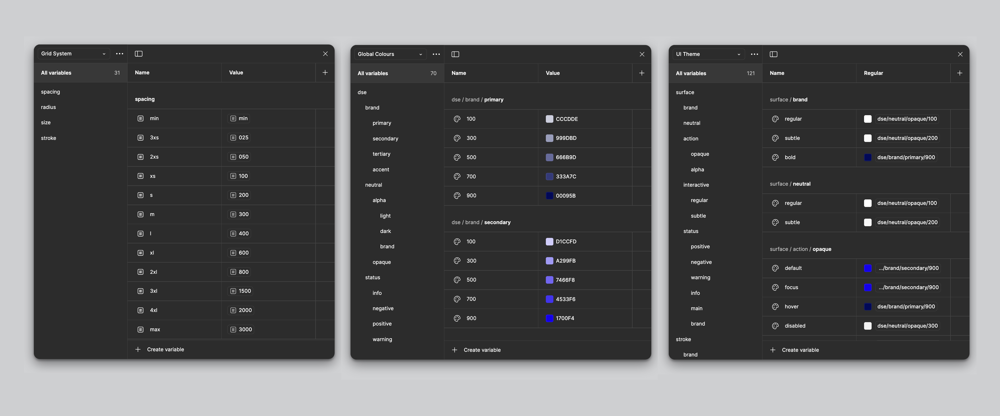

Scaling a design system across Europe
Ford was rolling out a new art direction globally, with the US site setting the visual benchmark. The European platform needed to align with this direction while supporting multiple internal teams contributing in parallel. Over time, the existing design system had become fragmented, inconsistent, and difficult to maintain.
How do we create a single, scalable design system that supports multiple teams, aligns with a global visual direction, and meets strict accessibility standards without slowing down delivery?
• Multiple teams contributing to the same system across markets
• Existing components already implemented in production
• High accessibility requirements (WCAG AA and above)
• A system large enough that future changes risked being slow and error-prone
The work focused on turning a fragmented set of design assets into a dependable system, establishing a single source of truth for consistency, accessibility, and long-term scalability.
This required auditing real usage in both design and code, working closely with engineering, and restructuring the system around tokens and variables instead of static styles.

There were too many font sizes, components, and style variations in circulation. Designers were unsure which options were correct, and different teams were making different assumptions.
Solution: We audited all existing design files and cross-referenced them with what was already live in production. Where multiple options existed, we prioritised:
• What was already implemented in code
• What met accessibility standards most reliably
This allowed us to reduce redundancy and clearly define which components and styles were canonical.

Given the size of the system, even small updates risked being time-consuming and prone to human error.
Solution: We rebuilt the system using Figma tokens and variables wherever possible. This allowed global changes to be made centrally and applied consistently across the system.
A clear naming convention was defined early, designed to scale as the system evolved. This was done in close collaboration with engineering to ensure alignment with existing and planned implementation patterns.

The system included a wide colour palette, plus light and dark modes, creating a large number of colour combinations that needed to meet WCAG AA standards.
Solution: We created a comprehensive colour reference that documented all approved combinations and explicitly excluded pairings that failed accessibility checks. This made accessibility decisions visible and repeatable, rather than something designers had to re-evaluate each time.
The result was a unified design system that acted as a reliable foundation for Ford Europe's digital products. It reduced inconsistency across teams, lowered the risk of errors during iteration, and ensured accessibility was built into the system rather than retrofitted.
Most importantly, it enabled teams to move faster with more confidence, knowing they were designing within a clear, scalable framework.